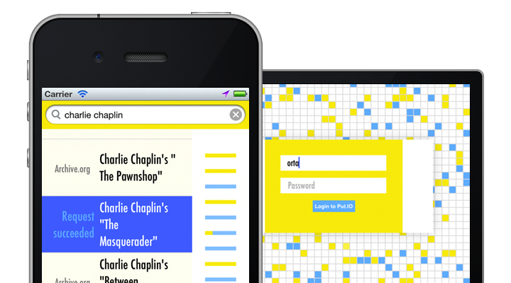

Put.IO for iOS
Browse you Put.IO content!
Everything you have on the site is on your iOS Device, watch downloads come in and MP4 conversion happen with the simple slide-side bar.
Search for new content!
Instant access to anything held on Archive.org and Mininova. If that doesn't work you can try turning off the filters and extending your search.
Universal app!
Seriously, you can just get something on the go on your Phone then watch later on your iPad. I do it all the time.
iCloud!
Keep track of where you are in a series auto-magically between all your devices. Essential for remembering if you're on episode 20 or 23.